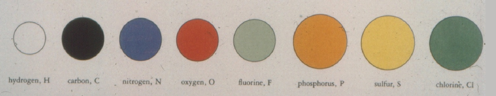
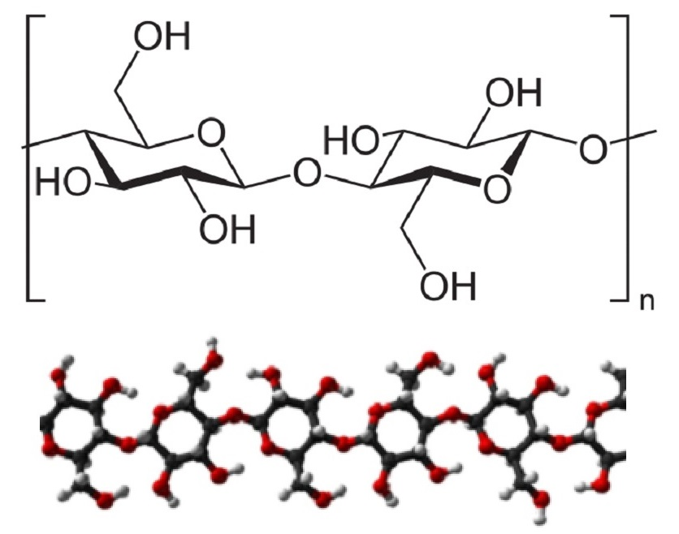
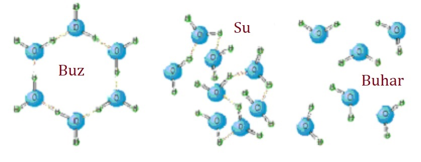

Mutlak yaratan ve yegâne Hakim olan Allah’ın eylemlerinde yani yapıp ettiklerinde asla “abes” yoktur. Abes kelimesi boşuna, gereksiz, amaçsız demektir. Bu anlamlarla, ifadeyi tersinden dillendirirsek, Allah’ın yarattığı ve halen de yaratmakta olduğu tüm var olanlarda ve olaylarda mutlak bir amaç, mutlak bir gereklilik mevcuttur. İnsan olarak bugün biz bu gayeleri göremeyebiliriz, anlamayabiliriz ama var olan her şeyin mutlak bir amacı vardır.
Sorgulayan insan olarak biz, neden beş parmağımız var, neden bu kadar farklı renkler var veya bu kadar kötü koku niçin oluşuyor? gibi sorular sorabiliriz. Araştırmalar yapabiliriz. Tartışabiliriz. Sormalıyız, araştırmalıyız ve tartışmalıyız da. Ama şuna tüm kalbimizle inanmalıyız ki onların her birinin mutlak bir gayesi vardır ve tüm bu varlıkların tek nedeni olan insana hizmet için de gerekli ve faydalıdır. Bunlar tabii ki ispat edilemeyen, ispat edilmeden inanmaya dayalı ifadelerdir ve Müslüman olarak buna inanırız ve inanmalıyız.
Bu konuyu burada bırakıp, özel bir yaratma konusuna geçmek istiyorum.
“İbret nazarıyla etrafına bakan bir insan, her şeyi yoktan var eden, şekillendiren ve idare eden bir yaratıcı olduğunu idrak eder. Gezegenlerin hiç sapmadan yörüngelerinde akıp gitmesi, güneşin yeryüzünü aydınlatması, ayın ve yıldızların bir kandil gibi geceyi süslemesi, bize adeta ‘Rabbini unutma!’ diye haykırır…”
İslam Ansiklopedisinin “Yaratmak” maddesinde, yaratma fiili İslâmî kaynaklarda en sık geçen haliyle “halk”tır; sözlükte “yaratmak, meydana getirmek, bir şeyden yeni bir şey icat etmek, imal etmek, ölçüp biçmek (takdir)” gibi anlamlar taşır.
Kur’ân-ı Kerîm’de kırk altı ayette elli iki defa “halk” kelimesi ve 200’ü aşkın yerde türevleri geçmektedir.
Allah’ın yaratma buyruğu olan “kün” (ol) emri, “Allah bir şeye hükmettiğinde ona ‘ol’ der, hemen olur” ifadesiyle sekiz ayette geçmektedir.
“Her şeyi yarattı” (Bakara 2/29; En‘âm 6/101, 102; Furkān 25/2; Zümer 39/62);
“Dilediğini yaratır” (Âl-i İmrân 3/47; Nûr 24/45; Kasas 28/68)
gibi mutlak yaratmadan söz eden çok sayıda ayet vardır.
Göklerin ve yerin yaratılmasıyla ilgili ayetlerde geçen “bi’l-hakk” ifadesi, evrenin ve içindekilerin boş yere değil, hikmetle yaratıldığını bildirir.
“Biliniz ki halk da emir de Allah’ındır.” (A‘râf 7/54)
Şimdi bu “kün fe yekün” hakikatine bakalım.
Bilim adamları bugüne kadar evrende toplam 154 element keşfetmişlerdir. Evrenin tamamı bu elementlerin farklı şekillerde bir araya gelmesinden oluşur.
Tekstil alanında gördüğümüz her şey ise yalnızca 8 elementten oluşur. 2024 yılında dünyada üretilen 132 milyon ton elyafın tamamı bu elementlerden meydana gelmiştir.
Bu elementler: Hidrojen, Karbon, Azot, Oksijen, Flor, Fosfor, Kükürt ve Klor’dur.
Bir karbon atomunun çapı 1.5×10-10 metredir. Bu, insan aklının doğrudan kavrayamayacağı kadar küçüktür.
Pamuk lifi, topraktan emilen su ve güneş enerjisiyle üretilen selüloz molekülünden oluşur. Selüloz yalnızca Karbon, Hidrojen ve Oksijen elementlerinden meydana gelir.
Su molekülü iki hidrojen ve bir oksijen atomundan oluşur. Allah’ın “ol” emriyle atomlar kovalent bağ kurar, moleküller oluşur, hayat başlar.
Isıtıldığında su buhar olur, soğutulduğunda buz… Moleküller arası bağların yönetimiyle madde hâl değiştirir.
Mühendislik, atomlar ve moleküller arasındaki bu bağların düzenlenmesi esasına dayanır.
81. Gökleri ve yeri yaratan, onların benzerlerini yaratmaya kadir değil midir? Evet, O her şeyi
bilen yaratıcıdır.
82. Bir şeyi dilediğinde O’nun sözü sadece “Ol” demektir, hemen olur.
83. Her şeyin mülkü elinde olan Allah ne yücedir. O’na döndürüleceksiniz.
“Hallâkul Alîm” ifadesi, bazı alimler tarafından “sürekli yaratan ve her şeyi bilen” şeklinde tercüme edilmiştir.
Allah elementler arasındaki bağları bir an için çekse, pamuk toz, insan bedeni jel hâline gelirdi. İşte bu yüzden Allah tüm evreni her an yeniden yaratmaktadır.
“O gün gök, erimiş maden gibi olur.
Dağlar da atılmış yün gibi olur.” (Meâric 70/8–9)